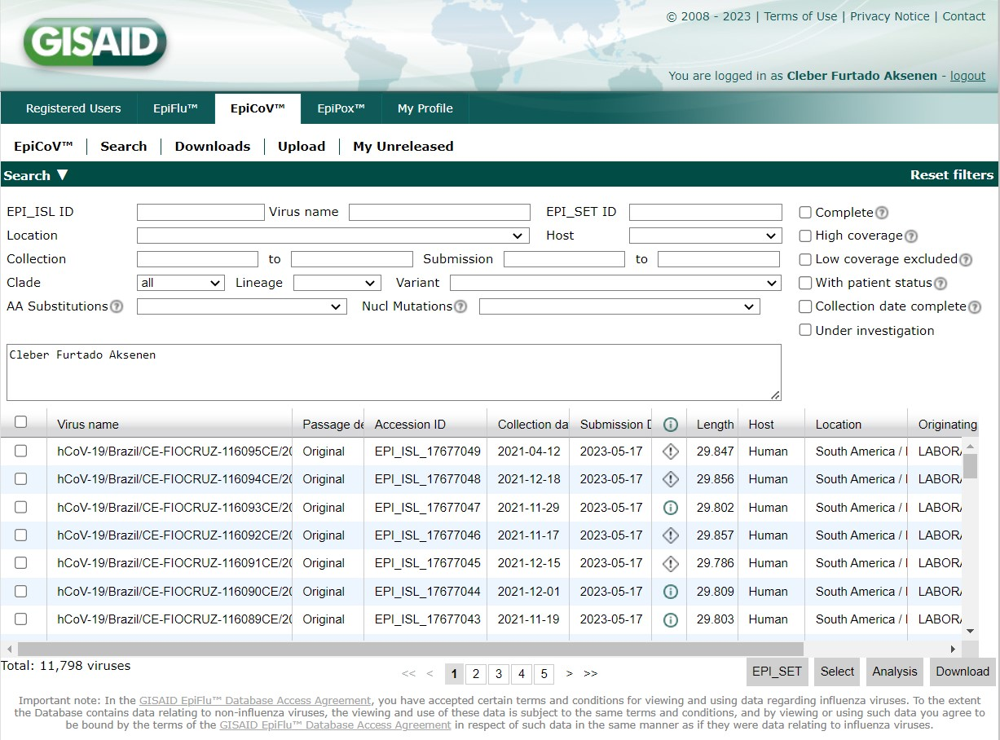
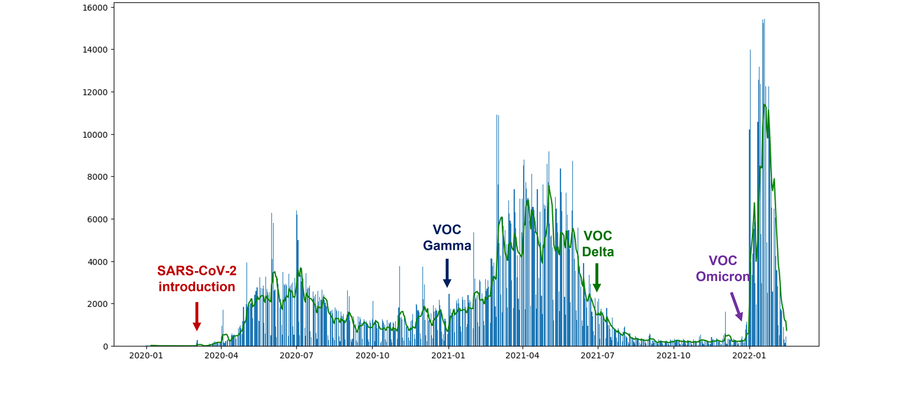
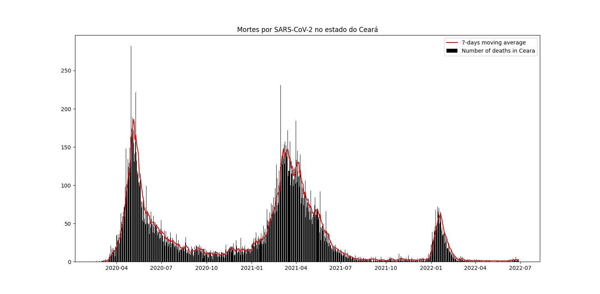
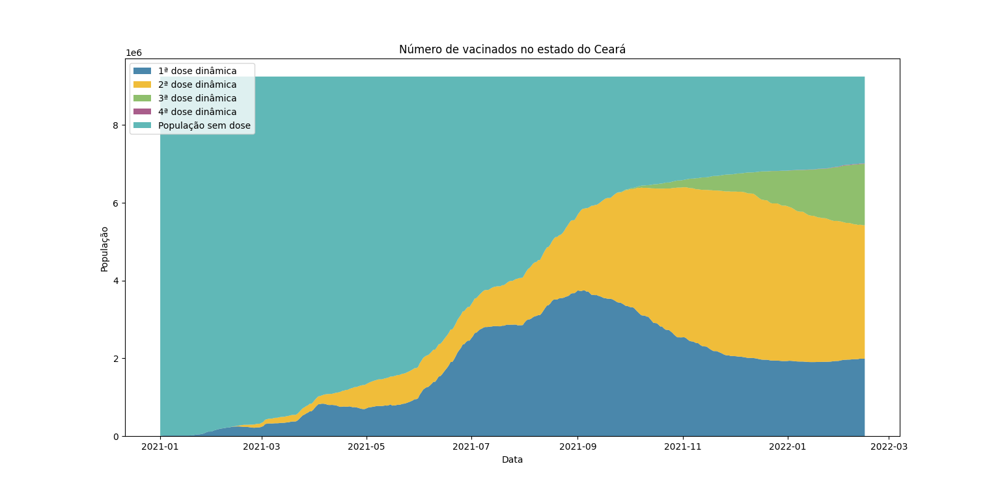

Molecular biology, Bioinformatics, Public health and innovation.
My experience
My journey in the academic realm commenced at Fiocruz in the early months of 2021, where I embarked on an exhilarating endeavor within the esteemed Fiocruz Genomic Network. Engaged in the meticulous analysis and vigilant monitoring of emerging SARS-CoV-2 outbreaks, I had the privilege to contribute to the collective knowledge surrounding this virus. It was an opportunity that allowed me to witness firsthand the dynamic interplay between cutting-edge research, technological advancements, and the urgent need to protect global health.
As time progressed, my role expanded and evolved, culminating in my current position as a bioinformatics analyst. Fueled by an insatiable curiosity and an unwavering commitment to public health, my work primarily revolves around the continuous surveillance and meticulous scrutiny of pathogen circulation. By utilizing the power of bioinformatics, I am dedicated to unraveling the complex genetic makeup of various pathogens, enabling us to comprehend their evolution, trace their origin, and anticipate potential threats to human well-being.
Fiocruz genomic network
The Genomic Network stands as a formidable collaboration, uniting the expertise of specialists across all units of the esteemed Oswaldo Cruz Foundation (Fiocruz) in Brazil, alongside esteemed partner institutes. Our collective mission is to generate comprehensive and robust data pertaining to the intricate behavior of the notorious SARS-CoV-2 virus through the precise decoding of its genome. Through this relentless pursuit of knowledge, we strive to monitor the ever-evolving genetic strains and mutations of the novel coronavirus, ultimately bolstering our nation's preparedness in combatting the pandemic on multiple fronts.

GISAID database
An impressive milestone has been reached by the Genomic Network, as it proudly contributed over 11,000 genomes to the esteemed GISAID EpiCoV database. This significant deposit adds to the rich tapestry of knowledge, with a grand total of >228,000 genomes now residing within the database. Such a remarkable feat underscores the dedication and collaborative spirit of the Genomic Network in advancing our understanding of genetic diversity and unraveling the intricacies of pathogens. Through these invaluable contributions, we pave the way for groundbreaking discoveries, enhanced surveillance, and more targeted interventions to combat the challenges that lie ahead.


The COVID-19 pandemic in Ceara, Brazil
Moving average of the number of cases in Ceara, Brazil (2020-2022).
Moving average of the number of deaths in Ceara, Brazil (2020-2022).
Number of vaccinated in Ceara, Brazil (2020-2022).
Academic participations
Emergence and Spread of the SARS-CoV-2 Variant of Concern Delta across Different Brazilian Regions

ViralFlow: A Versatile Automated Workflow for SARS-CoV-2 Genome Assembly, Lineage Assignment, Mutations and Intrahost Variant Detection

Participation in congresses
COVID-19 variants of concern: study on the profile of carriers of the Delta variant in the state of Ceara, Brazil.

Emergency and transmission od deletions in the SARS-CoV-2 genome as indication of viral adaptation.

Evolutionary deletions in the SARS-CoV-2 genome as signature trends for viral fitness and adaptation.

Exploratory analysis of SARS-CoV-2 molecular signature profiles as evidence for a theoretical biological limit to viral evolution.